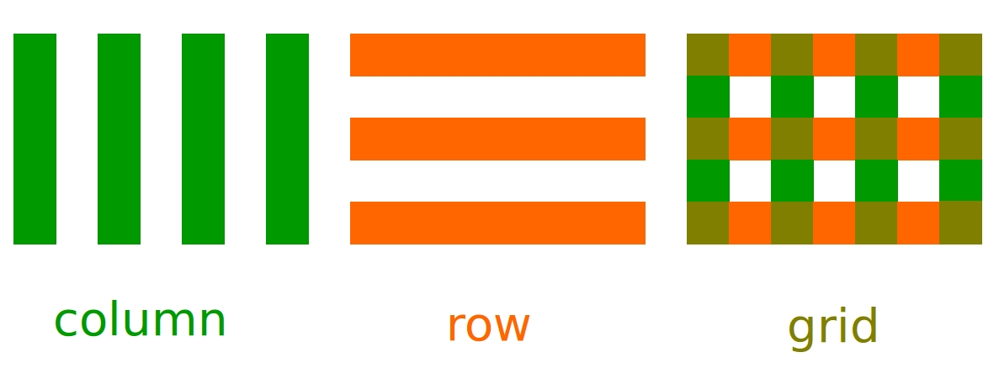
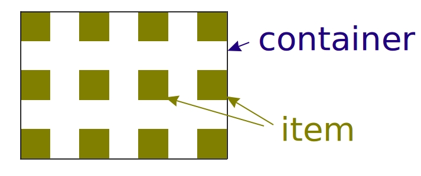
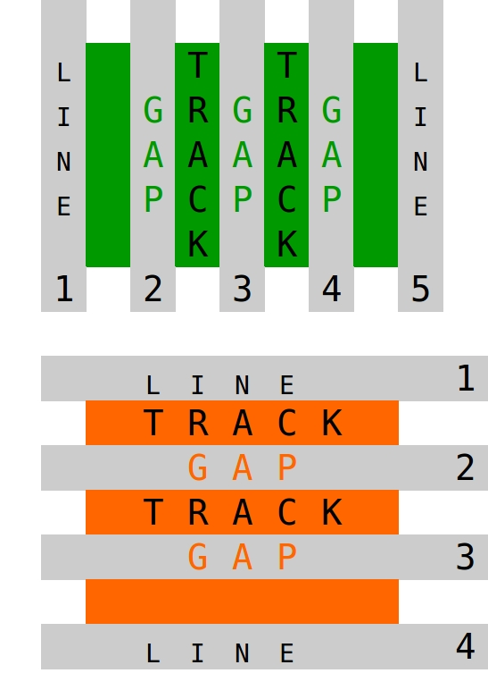
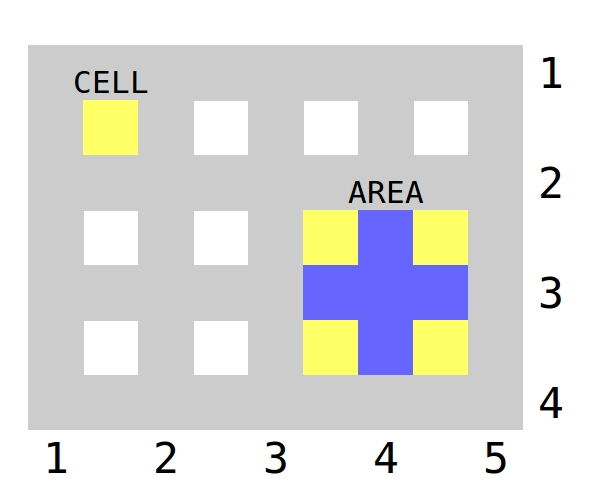

Grid
Grid - это двухмерная система компоновки сайта на основе сетки
колонка/column - ряд/-row.

Принцип построения макета
- Определяем контейнер
.container { display: grid; }
- Задаем колонки и стобцы
.container {
grid-template-columns: ...;
grid-template-rows: ... ; }
- Помещаем элементы контейнера по своим местам
.item {
grid-column: ...;
grid-row: ...; }
Основные термины:
контейнер
container
блок со свойством display: grid;
элемент
item
- прямой потомок контейнера.

<div class="container">
<div class="item"></div>
<div class="item"></div>
</div>
CSS свойства grid относятся либо к container, либо к item.
Основные термины:
line разделяющая линия
track пространство
между смежными линиями
gap промежуток
между колонками и стобцами

Основные термины:
cell наименьшая неделимая
единица контейнера
area пространство, вмещаюещее
одну ячейку и более

Dispalay: grid || inline-grid
grid
inline-grid
.container{ width:
(if inline-grid => content, if grid => width of parent) }
Grid-template-columns:
Grid-template-rows:
указывают количество tracks, задавая
- размер track
- имя линий, образующих track
Далее рассматриваем только Grid-template-columns,
т.к. Grid-template-rows использует те же правила.
Grid-template-columns:
/* автозаполнение */
repeat(auto-fill, 200px)
repeat(auto-fill, minmax(200px, 33%))
repeat(auto-fill, minmax(200px, 1fr))
fit-content(30%) fit-content(40%) fit-content(30%)
Пример:
Grid-auto-columns:
/* для неявно заданного track,
например для текста без обертки в container */
min-content; ||
max-content;
100px ||
10% ||
10rem
0.8fr
minmax ()
fit-content()
Justify-items / rows / :
start ||
end ||
center ||
stretch
Расположение контента:
пример

Align-items / column
start ||
end ||
center ||
stretch
Расположение контента:
пример

Justify-content / rows / :
start ||
end ||
center ||
stretch ||
space-around ||
space-between ||
space-evenly
Расположение контента:
пример

Align-content / column / :
start ||
end ||
center ||
stretch ||
space-around ||
space-between ||
space-evenly
Расположение контента:
пример

Grid Items
- grid-column-start:
- grid-column-end:
- grid-row-start:
- grid-row-end:
в качестве значений могут быть
- номера или имена линий
- span (число) - количество объединенных ячеек
- span (имя линии) - объединение ячеек до указанной линии
- auto
Grid Items
сокращенная запись (через / )
- grid-column:
start / end
- grid-row:
start / end
- номера или имена линий
- span (число) - количество объединенных ячеек
- span (имя линии) - объединение ячеек до указанной линии
- auto
Пример:
grid-column: 1 / span 2;
grid-row: 1 / span 3; ;
Areas
Conainer - grid-template-areas:
Items - grid-areas:
Пример:
.container {
grid-template-areas: "header header header header"
"nav main main aside"
"footer footer footer footer"; }
.item-header { grid-area: header; }
.item-nav { grid-area: nav; }
.item-main { grid-area: main; }
.item-aside { grid-area: aside; }
.item-footer { grid-area: footer; }
Сетка 12-колонок на основе grid
Пример